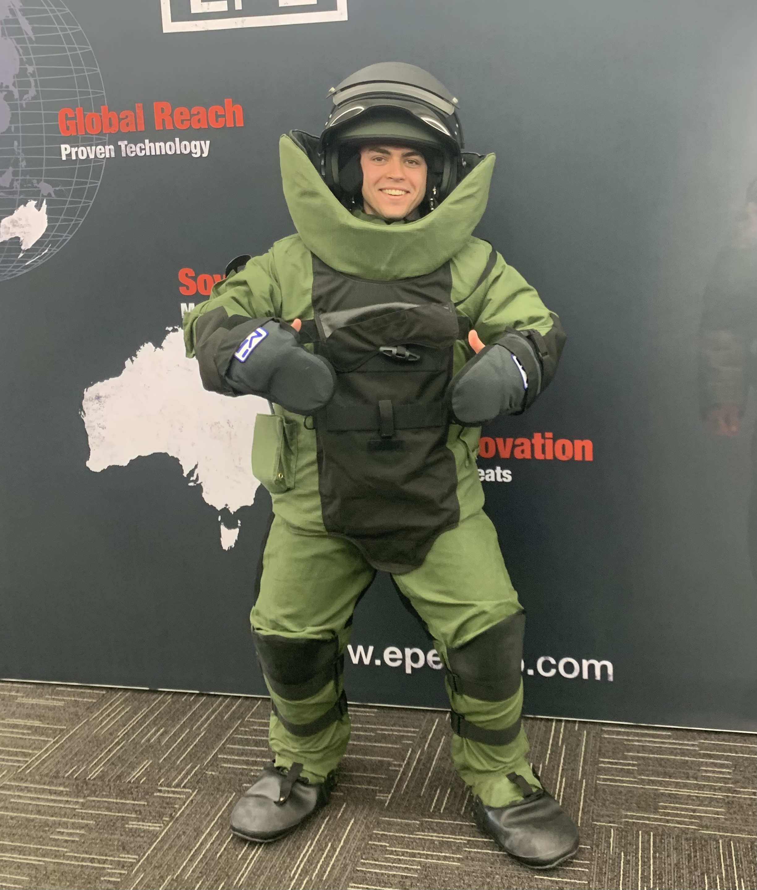
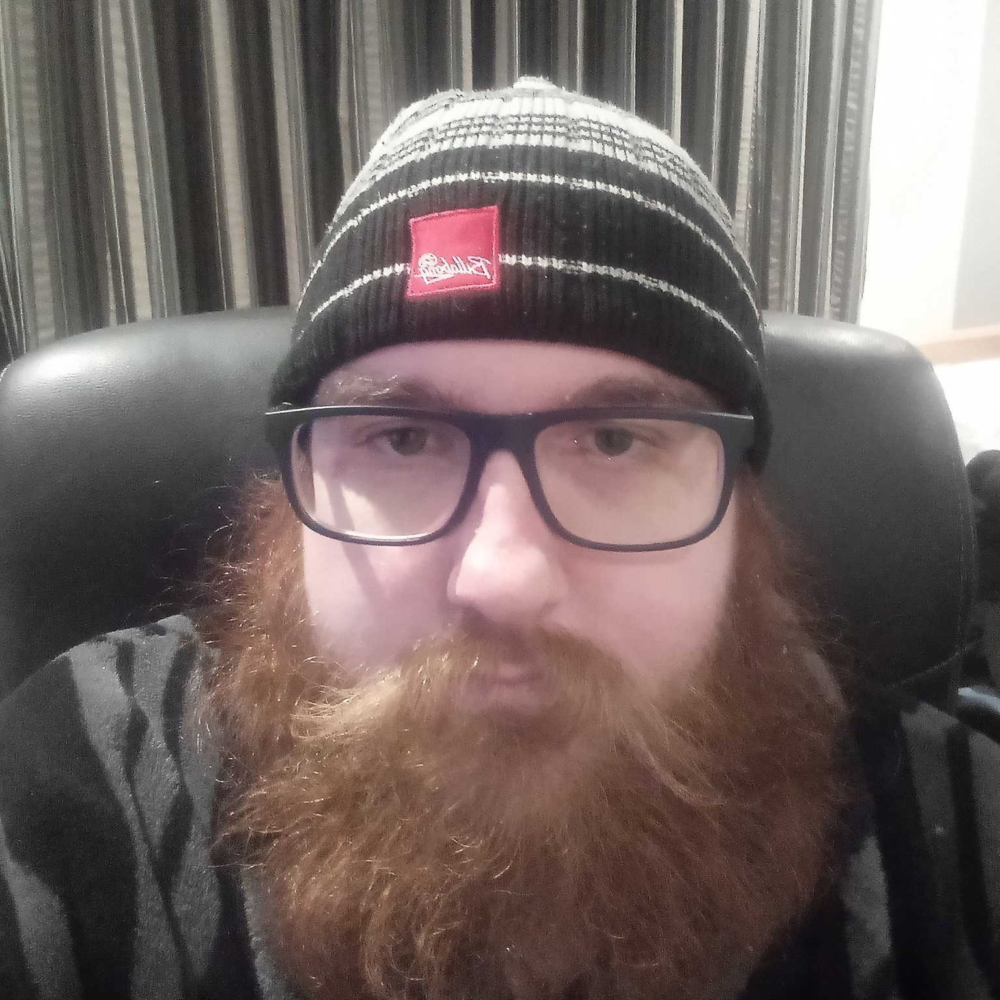

Stephan
Hello, I’m Stephan, student number #s3960896,
I am 25 years old and currently live in Sydney, NSW. My hobbies include gaming when I can and cooking all the time. I have an interest in Cyber Security and computer building, I have a certificate III in IDMT, and that’s as far as my IT experience goes, but that was eight years ago now, and I’ve forgotten just about everything.
Shania

Hey, I'm Shay #s3965753.
I was born an Indigenous Australian, with my biological father being Yugoslavian - known today as Serbia - and Maltese. My mother is Indigenous, with Irish in her line as well. Born an angry fighting nerd, my interest in computers was set to be guaranteed. Between the writing, gaming, existential dread and computing, there's not much time for other pastimes, but I make time. Or at least time signatures! I write music in my spare time. It's not good music, but it exists. Other things I like are pizza, swords, and comic sans. My next steps are more University, programming, video game design, law, music, creative writing, history, architecture, finance, and philosophy. There's no such thing as being too qualified, and they say that the Jack-of-All-Trades, Master of None, is better than the Master of One. I still will try and Master at least one.
Jo

Jo Stammers #s3955561
Born in Victoria, I grew up in a small town marked ‘the centre of Victoria’. I'm 36 years old; I have two children, a 14yo son and a 10yo daughter. I wanted to be a paramedic and was very passionate about it. I spent six years as a volunteer First Responder (Advanced First Aid) with St John Ambulance Victoria, including 18 months as a grade IIII operations officer. As a result of my medical diagnosis, I could not continue in the medical field. Therefore, I re-evaluated what I could do, and the outcome happened to be Information Technology (IT). My decision to choose to study IT was very influential. Through conversation with a programmer friend, I began to realise I have a deep underlying interest in the future of technology and how it can help for good. I recall doing IT back in early high school (‘98-‘99), where I built a basic website using JavaScript from what I remember. I have just started studying to gain a Bachelor of IT. I have experience in using computer-based telephone diallers and different databases and survey platforms and currently learning processes of HTML and CSS.
Thomas
Thomas Kauran #s3305113
Born and raised in Australia, my hobbies mainly include board games and video games. Interest in IT is focused on web development and cloud computing. Experience includes building web applications to meet clients' requirements on multiple platforms, including desktop, mobile and web.
Gianni

My name is Gianni #s3960166,
I am 18 years old, have just recently finished my year 12 VCE and am studying for a Bachelor of IT at RMIT. I love most things IT-related, mainly computers and gaming consoles, however. Growing up, I fell in love with tech and devices from things like the Play station’s 1-5, the original Nintendo DS, Gameboys and more. Throughout my life, I have loved the outdoors and going on adventures with my family to places such as Lorne, The Grampians and Echuca. I have also been overseas to the U.S.A, where I’ve been to places such as New York, LA, Las Vegas and more. I am also an athletic person and have played many sports. The one I’m best at and my favourite to play is basketball.
Nathan

I'm new to the whole programming and IT scene outside of doing it in high school a tiny bit; However, I have always had an interest in these areas, just never put any effort into officially pursuing them as a profession until now; I spend most of my time socialising with friends via discord or in person. Honestly, it's scarce that I'm not perpetually in conversation due to this; my central pass time would overwhelmingly be gaming; I'm always on the watch for what's new and exciting within this area and all tech, for that matter.